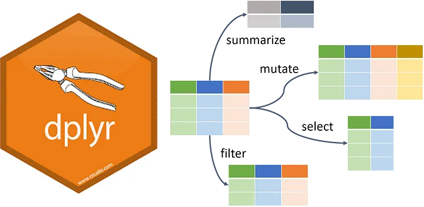

# A tibble: 101,316 × 27
seqn exam psu strata wts_mec_2yr exam_status age age_group sex
* <dbl> <dbl> <dbl> <dbl> <dbl> <chr> <dbl> <chr> <chr>
1 1 1999 1 5 10983. interview and exam 2 17 and b… Fema…
2 2 1999 3 1 28325. interview and exam 77 75 and a… Male
3 3 1999 2 7 46192. interview and exam 10 17 and b… Fema…
4 4 1999 1 2 10251. interview and exam 1 17 and b… Male
5 5 1999 2 8 99445. interview and exam 49 45 to 65 Male
6 6 1999 2 2 39657. interview and exam 19 18 to 45 Fema…
7 7 1999 2 4 25525. interview and exam 59 45 to 65 Fema…
8 8 1999 1 6 31511. interview and exam 13 17 and b… Male
9 9 1999 2 9 7576. interview and exam 11 17 and b… Fema…
10 10 1999 1 7 22446. interview and exam 43 18 to 45 Male
# ℹ 101,306 more rows
# ℹ 18 more variables: race_ethnicity <chr>, education <chr>, income_hh <chr>,
# pregnant <chr>, bp_sys_mmhg <dbl>, bp_dia_mmhg <dbl>, n_msr_sbp <dbl>,
# n_msr_dbp <dbl>, bp_controlled <chr>, acr_mgg <dbl>, albuminuria <chr>,
# chol_hdl_mgdl <dbl>, chol_total_mgdl <dbl>, health_insurance <chr>,
# bp_high_aware <chr>, bp_meds <chr>, hc_usual_facility <chr>,
# hc_visit_1yr <chr>Getting Started with dplyr
And the Pipe |>
Chad Murchison
2024-07-03
From Last Time
Any questions on programming fundamentals from last time?
For review, see chapter 3 from R4DS
For recipes, you can check the fourth, fifth, and seventh recipes under Visualize Data on Posit Cloud
Tip
Although challenging, these are the backbone of R and will get easier with practice
From Last Time
Any questions on the reading / primer?
We’ve seen the R fundamentals on accession with vectors and functions; now let’s take the next step and work with data frames
Agenda
Data frames
An introduction to the pipe
|>Data isolation
Tidy evaluation and a teaser on data transformation
Data Frames (Are Amazing!)
Data Frames - Why They’re Amazing
Data frames are the most widely used data storage object within R
They are amazing and useful for many reasons:
They are the default receptacle for any rectangular data
Most functions in R will readily accept a data frame for their
data=argumentConveniently package related variables together
Recall, we think of them as vectors we’ve bound column-wise
Data Frames - Why They’re Amazing
Functions can be applied to data frames and their behavior will generally be consistent and uniform
Filtering on rows will return all columns and vice versa
Columns can hold vectors of different classes; this is very intuitive
View data frames as having rows as observations and columns are many kind of variables
Other data storage objects (e.g. matrices) only hold one class
The packages in the
tidyverseextend this and prioritize engaging with data frames via thetibble
Data Frames - The Tibble
- Tibbles are data frames, just a special “tidy” flavor

- Primary distinction between the data frame’s
data.frameclass
and the tibble’stblclass is with respect to printing to console and when subsetting
Data Frames - The NHANES Data Set

Program of studies designed to assess health and nutritional status in children and adults nationally
Started in the 1960’s and became a continuous program in 1999
Includes demographic, socioeconmoic, dietary, and health-related questions
What does all this mean?
Data Frames - NHANES is Big and Messy
Data Frames - NHANES is Big and Messy
Trying to plot this data will probably work but you won’t be happy with the results
Most stock summarization functions like
mean()orsd()will almost certainly failWe need to clean up the data set into something more tractable
But how?
Data Frames - We’ll Use dplyr
Ignore the bitter grumblings of your instructor
Data Frames - A Clean NHANES
After a bit of work with dplyr we can eventually get this
# A tibble: 20 × 6
exam age sex bp_sys_mmhg n_msr_sbp bp_meds
<dbl> <dbl> <chr> <dbl> <dbl> <chr>
1 1999 77 Male 101. 3 No
2 1999 49 Male 122 3 Yes
3 2001 39 Male 125. 3 No
4 2001 23 Male 103. 3 No
5 2003 16 Female 98.7 3 No
6 2003 17 Male 103 2 No
7 2005 44 Female 139. 3 Yes
8 2005 70 Male 131. 3 Yes
9 2007 62 Female 123. 3 Yes
10 2007 71 Male 145. 3 Yes
11 2009 34 Male 113. 3 No
12 2009 16 Male 110 3 No
13 2011 22 Male 111. 3 No
14 2011 44 Female 118 3 No
15 2013 69 Male 113. 3 No
16 2013 54 Male 157. 3 No
17 2015 62 Male 123. 3 No
18 2015 53 Male 140 3 No
19 2017 66 Female 200 2 Yes
20 2017 18 Male 111. 3 No First Let’s Tell a Story (Workflow)
Workflows - Program a Story
Here is the legendary tale of Little Bunny Foo Foo
Little bunny Foo Foo
Went hopping through the forest
Scooping up the field mice
And bopping them on the head
- How would we go about programming this in R?
Workflows - Making New Objects
We could save each intermediate step as a new object:
Problems:
The code is cluttered with unimportant names
You have to carefully increment the suffix on each line
Workflows - Overwrite the Original Object
We could overwrite the original object which can reduce typing errors:
Debugging is painful and tedious; the pipeline has to be done de novo
Repetition (7
foo_foos) obfuscates the code making it hard to follow
Workflows - Functional Composition Nests
Abandon assignment operations and just nest the functions together:
Or as I would type…
No one likes to read or type this (except Chad)
Workflows - The Pipe |>
Last, we could use the pipe operator |>:
Pros
Focuses on the function verbs and not the object nouns
Unlike the nested composition, this flows as a series of imperative actions: Foo Foo hops, then scoops, then bops
Workflows - The Pipe |>
Last, we could use the pipe operator |>:
Cons
- If you’ve never seen
|>before, you’ll have no idea what this code does
Luckily, its behavior is intuitive which makes it very easy to share and describe to others
Workflows - So What’s a Pipe?
- Simply, a pipe takes the object on the left hand side and makes it the first argument for the function on the right hand side
[1] 5.5[1] 5.5- We call
|>a “pipe” since it literally pipes whatever is on the left into the first argument on the right
Workflows - So What’s a Pipe?
- More broadly, the pipe makes these two snippets equivalent
- Now we don’t need to specify a value for the
main_argargument since|>automatically passesxxfor us
Workflows - The Strength of the Pipe
- The value is in making written code more human readable as you apply a series of functions
# Using the functions like they're a matryoshka doll
another_neat_one(
nifty_function(main_arg = xx, other_arg = yy, last_arg = zz),
another_arg = ww
)
# Start with xx and then apply the functions in series
xx |>
nifty_function(other_arg = yy, last_arg = zz) |>
another_neat_one(another_arg = ww)
# Stylistic tip: end lines at the |> - Thus avoids clunky temporary objects and densely nested functions
Workflows - When Not to Pipe
If your pipes are longer than ~5 steps use intermediate R objects with meaningful names
- This will make debugging easier as you can troubleshoot the intermediary objects
- Your code will be more understandable; variable names can help communicate intent
Workflows - When Not to Pipe
If your pipes are longer than ~5 steps use intermediate R objects with meaningful names
You have multiple inputs or outputs being manipulated
- If multiple objects are being coalesced, it is better to have parallel workflows that meet at the end
Warning
Pipes can only ever pass one essential from left to right
Workflows - When Not to Pipe
If your pipes are longer than ~5 steps use intermediate R objects with meaningful names
You have multiple inputs or outputs being manipulated
Your workflow has a complex dependency structure
- Pipes are fundamentally linear and expressing complex relationships with them is generally confusing
- They can behave very poorly under iterative (repeating) processes
Workflows - There are Two Pipes
R introduced
|>as a native operator installed with R 4.1 in 2021This was designed to supplant the
%>%operator which has been part of the tidyverse since the end of 2013 in themagrittrpackage
They are largely functionally identical although
|>is more limited than%>%%>%is still used and you will almost certainly see it in codeBoth have R version dependencies:
%>%R>=3.5 and|>R>=4.1
Isolation with dplyr
Isolation - dplyr Functions
dplyrhas several functions to make data frame isolation easierfilter()will subset a data frame by rowsselect()instead subsets a data frame by columnsarrange()let’s you reorganize a data frame according to row
Importantly, the row functions do not alter your columns and column functions do not alter rows
As part of the tidyverse, these
dplyrfunctions will always return the same type of output as their original input e.g. start with a data frame and end with a data frame
Isolation - Before You Subset Your Data
Important
WHEN SUBSETTING, ALWAYS MAKE A NEW OBJECT!!
NEVER OVERWRITE YOUR SOURCE DATA!!
- Let’s try to work with the NHANES data set
Isolation - Recall the Reduced NHANES Data
# A tibble: 20 × 6
exam age sex bp_sys_mmhg n_msr_sbp bp_meds
<dbl> <dbl> <chr> <dbl> <dbl> <chr>
1 1999 77 Male 101. 3 No
2 1999 49 Male 122 3 Yes
3 2001 39 Male 125. 3 No
4 2001 23 Male 103. 3 No
5 2003 16 Female 98.7 3 No
6 2003 17 Male 103 2 No
7 2005 44 Female 139. 3 Yes
8 2005 70 Male 131. 3 Yes
9 2007 62 Female 123. 3 Yes
10 2007 71 Male 145. 3 Yes
11 2009 34 Male 113. 3 No
12 2009 16 Male 110 3 No
13 2011 22 Male 111. 3 No
14 2011 44 Female 118 3 No
15 2013 69 Male 113. 3 No
16 2013 54 Male 157. 3 No
17 2015 62 Male 123. 3 No
18 2015 53 Male 140 3 No
19 2017 66 Female 200 2 Yes
20 2017 18 Male 111. 3 No Isolation - filter()
filter()keeps rows that match specified conditionsIt takes a data frame as the first argument followed by an expression that can resolve to a logical vector
The logical vector uses common operators like
<,>,==, and!=Multiple logical expressions on multiple columns can be used with set operators like
&,|, and!
Question:
In NHANES, how many males were taking medications to lower blood pressure?
Isolation - filter() in NHANES
- First filter to only males
# A tibble: 15 × 6
exam age sex bp_sys_mmhg n_msr_sbp bp_meds
<dbl> <dbl> <chr> <dbl> <dbl> <chr>
1 1999 77 Male 101. 3 No
2 1999 49 Male 122 3 Yes
3 2001 39 Male 125. 3 No
4 2001 23 Male 103. 3 No
5 2003 17 Male 103 2 No
6 2005 70 Male 131. 3 Yes
7 2007 71 Male 145. 3 Yes
8 2009 34 Male 113. 3 No
9 2009 16 Male 110 3 No
10 2011 22 Male 111. 3 No
11 2013 69 Male 113. 3 No
12 2013 54 Male 157. 3 No
13 2015 62 Male 123. 3 No
14 2015 53 Male 140 3 No
15 2017 18 Male 111. 3 No Isolation - filter() in NHANES
- Then only those males on BP medication
# A tibble: 3 × 6
exam age sex bp_sys_mmhg n_msr_sbp bp_meds
<dbl> <dbl> <chr> <dbl> <dbl> <chr>
1 1999 49 Male 122 3 Yes
2 2005 70 Male 131. 3 Yes
3 2007 71 Male 145. 3 Yes Isolation - filter() in NHANES
- Use
nrow()to get the number of rows in the filtered set
- Now let’s clean up the workflow
Isolation - filter() with a Pipe Solution
To create the
answer,Start with
nhanes, THENFilter to contain only males on BP meds, THEN
Count the number of rows which were left over
Isolation - Other dplyr functions
select()extracts columns from a data set; it’s like$but much more versatile and consistent e.g. it won’t return a vectorarrange()will sort a data frame row-wise by a specified column / variable; can wrap the variable indesc()for descending orderslice()and its relatives index rows by their location; again like[]but more consistent and versatileThe full list of
dplyrfunctions can be found on the package’s help page
Next question:
In NHANES, what was the highest systolic blood pressure in males?
Isolation - NHANES Highest BP in Males
Start with NHANES and begin piping |>
# A tibble: 20 × 6
exam age sex bp_sys_mmhg n_msr_sbp bp_meds
<dbl> <dbl> <chr> <dbl> <dbl> <chr>
1 1999 77 Male 101. 3 No
2 1999 49 Male 122 3 Yes
3 2001 39 Male 125. 3 No
4 2001 23 Male 103. 3 No
5 2003 16 Female 98.7 3 No
6 2003 17 Male 103 2 No
7 2005 44 Female 139. 3 Yes
8 2005 70 Male 131. 3 Yes
9 2007 62 Female 123. 3 Yes
10 2007 71 Male 145. 3 Yes
11 2009 34 Male 113. 3 No
12 2009 16 Male 110 3 No
13 2011 22 Male 111. 3 No
14 2011 44 Female 118 3 No
15 2013 69 Male 113. 3 No
16 2013 54 Male 157. 3 No
17 2015 62 Male 123. 3 No
18 2015 53 Male 140 3 No
19 2017 66 Female 200 2 Yes
20 2017 18 Male 111. 3 No Isolation - NHANES Highest BP in Males
Apply filter() on the column sex to return only males
# A tibble: 15 × 6
exam age sex bp_sys_mmhg n_msr_sbp bp_meds
<dbl> <dbl> <chr> <dbl> <dbl> <chr>
1 1999 77 Male 101. 3 No
2 1999 49 Male 122 3 Yes
3 2001 39 Male 125. 3 No
4 2001 23 Male 103. 3 No
5 2003 17 Male 103 2 No
6 2005 70 Male 131. 3 Yes
7 2007 71 Male 145. 3 Yes
8 2009 34 Male 113. 3 No
9 2009 16 Male 110 3 No
10 2011 22 Male 111. 3 No
11 2013 69 Male 113. 3 No
12 2013 54 Male 157. 3 No
13 2015 62 Male 123. 3 No
14 2015 53 Male 140 3 No
15 2017 18 Male 111. 3 No Isolation - NHANES Highest BP in Males
Use arrange() to sort the filtered set for descending by systolic BP
# A tibble: 15 × 6
exam age sex bp_sys_mmhg n_msr_sbp bp_meds
<dbl> <dbl> <chr> <dbl> <dbl> <chr>
1 2013 54 Male 157. 3 No
2 2007 71 Male 145. 3 Yes
3 2015 53 Male 140 3 No
4 2005 70 Male 131. 3 Yes
5 2001 39 Male 125. 3 No
6 2015 62 Male 123. 3 No
7 1999 49 Male 122 3 Yes
8 2009 34 Male 113. 3 No
9 2013 69 Male 113. 3 No
10 2017 18 Male 111. 3 No
11 2011 22 Male 111. 3 No
12 2009 16 Male 110 3 No
13 2001 23 Male 103. 3 No
14 2003 17 Male 103 2 No
15 1999 77 Male 101. 3 No Isolation - NHANES Highest BP in Males
Use select() to extract the bp_sys_mmhg column of interest
Isolation - NHANES Highest BP in Males
With slice() index out the 1st row which is the highest systolic BP
Isolation - NHANES Highest BP in Males
Since the output has remained a consistent tibble, coerce it to numeric
Isolation - Common Logical Operators in R
| Operator | Definition | Operator | Definition |
|---|---|---|---|
< |
less than | x | y |
x OR y |
<= |
less than or equal to | is.na(x) |
test if x is NA |
> |
greater than | !is.na(x) |
test if x is not NA |
>= |
greater than or equal to | x %in% y |
test if x is in y |
== |
exactly equal to | !(x %in% y) |
test if x is not in y |
!= |
not equal to | !x |
not x |
& |
and | x & y |
x AND y |
%in% is a new, but powerful, operator
x == "value1" | x == "value2" is equivalent tox %in% c("value1", "value2")
Tidy Evaluation
Tidy Evaluation
The tidyverse makes extensive use of tidy evaluation which dictates how most functions access variables within a data frame
There are two main variants, data masking and tidy selection
When you check tidyverse function documentations you can look for
<data-masking>or<tidy-select>to see which flavor you can use
Tidy Evaluation
Data masking - as seen with
filter()andarrange(), you can use data frame variable as if they were variables in the global environment- Instead of
data_frame$my_varyou can usemy_varwithin tidyverse functions as is and without quotes
- Instead of
Tidy selection - so far only seen with
select()but allows you to choose variables based on position, name, or type, for example…select(df, 1)selects the first column (position/indexing)select(df, c(a, b, c))selects columnsa,b, andcselect(df, where(is.numeric))selects all numeric columns
Next Time - More on dplyr
Working with
dplyrfunctions to organize, transform, summarize, and create new datagroup_by()to divide a data set into groupssummarize()for aggregated measures like sum, mean, etcmutate()to transform old columns into new ones
Continuing to build workflows and comments on style and organization
Still focused on chapter 3 in R4DS
Continue to go through the recipes under Transform Tables on
Posit Cloud